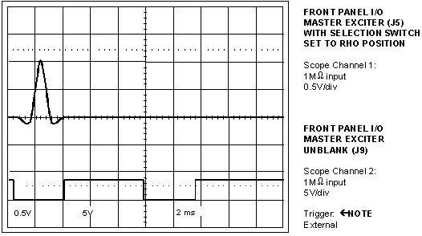
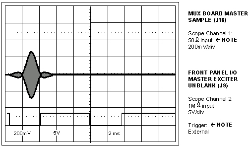
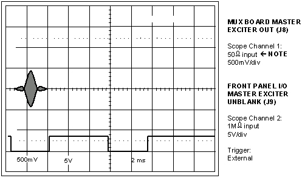
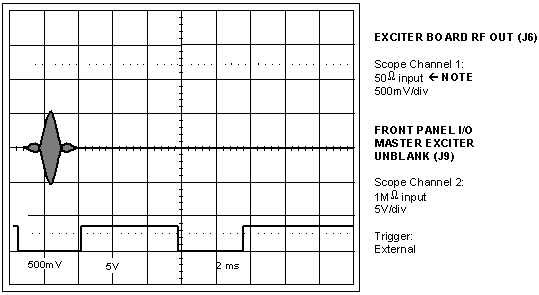

Proprietary to General Electric Company
Direction 5440000, Rev# 5
Signa HDxt Service Methods
Module Version 1.0, Version Date 4/26/07
Proprietary to General Electric Company |
Illustration 1: FRONT PANEL I/O J5 WAVEFORM

Click Here to Return to Descriptions, Then Refer to Illustration 1.
Illustration 2: MUX BOARD MASTER SAMPLE WAVEFORM (J16)

Click Here to Return to Descriptions, Then Refer to Illustration 2.
Illustration 3: MUX BOARD MASTER EXCITER OUT J8

Click Here to Return to Descriptions, Then Refer to Illustration 3.
| ||||
| The system must already be pulsing or must have been paused after successfully pulsing before the next measurement can be made. Opening the connection between the Exciter Board RF Out J6 and the MUX Board before a manual prescan has been started or started and then paused will result in system prescan faults. | ||||
Illustration 4: EXCITER BOARD RF WAVEFORM (J6)

Click Here to Return to the Main Procedure, Then Refer to Illustration 4.